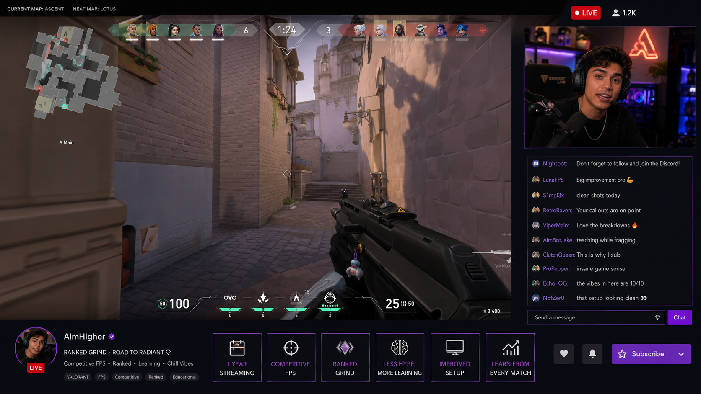
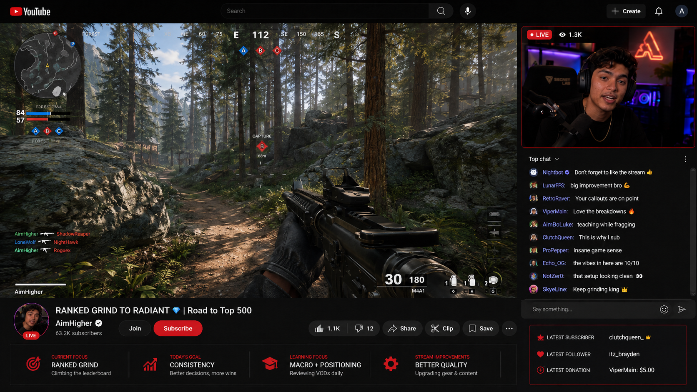
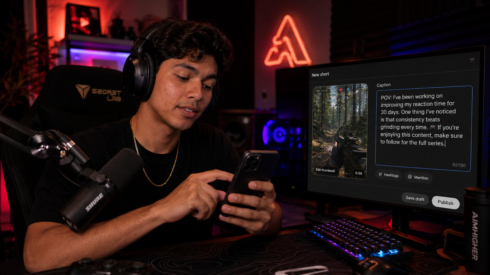

Use this to share your growth journey with your audience. It sounds authentic and relatable — viewers connect with creators who show progress, not just highlights.
"I've been working on improving my aim for about three weeks — you can actually see the difference in my stats today."
Walk your audience through your thinking in real time. It makes the stream more engaging because viewers feel like they're part of the decision, not just watching it.
"What I'm trying to do is bait them out of the building and force a 1v1 in the open — patience is the whole play here."
Give new viewers context about who you are and how long you've been doing this. Essential for channel bios, introductions, and any time a new viewer asks "how long have you been doing this?"
"I've been streaming for about eight months — started with ten viewers and now we've got this amazing community."
Tell new viewers what your channel is really about — the vibe, the niche, the people. More personal than just naming your game. Works perfectly in bios and first-time introductions.
"I'm trying to build a community around chill competitive gaming — people who take the game seriously but keep the energy positive."
The most natural way to ask for a follow, sub, or like. It connects the action to something the viewer is already feeling — so it sounds genuine, not desperate. Used constantly by successful streamers.
"If you're enjoying the stream, make sure to drop a follow — it genuinely makes a difference and I read every single one."
Share insight with your audience about the game, the meta, or your own improvement. It sounds thoughtful and considered — a step up from just saying "I think." Great for keeping viewers engaged and thinking.
"One thing I've noticed is that most players panic in the final circle — staying calm is honestly the biggest competitive advantage."
Be transparent with your audience about your decisions, your content choices, or your strategy. Honesty builds trust on stream — and this phrase signals you're about to be real with them.
"The reason I'm doing this is because I want to prove you can rank up without playing meta — skill over patch notes."
Use this when something complex is on screen and new viewers need context. It shows you're audience-aware — one of the most important skills for any streamer. Never assume everyone knows what's going on.
"Let me quickly explain what's happening — we've been sieging this base for 20 minutes and they keep rotating to the same corner."
💡 Quick Grammar Reminder
The phrases in this lesson use two closely related structures. You don't need to memorise rules — just notice the pattern and how it feels.
Present Continuous — happening right now
I'm + verb-ing"What I'm trying to do is…" → right now, in this moment"I'm trying to build a community…" → an ongoing current projectPresent Perfect Continuous — started then, still now
I've been + verb-ing"I've been streaming for 8 months" → started 8 months ago, still ongoing"I've been working on improving…" → a journey that's still in progress
"Hey, welcome to the stream everyone — and welcome to anyone who's new. Let me quickly explain what's happening — I'm in a ranked game, final four squads, and I'm the last one alive on my team. No pressure. What I'm trying to do is hold this building until the zone forces them in. One thing I've noticed is that aggressive players always push too early here — so I'm just going to be patient and make them come to me. The reason I'm doing this is because I've been grinding this strategy all week and today is the test. And hey — if you're enjoying the stream, make sure to hit that follow button. It means the world."

"Hey, what's up — if you're new here, welcome. I've been streaming for about a year now, mostly competitive FPS and the occasional ranked grind. I'm trying to build a community around honest, analytical gameplay — less hype, more learning. I've been working on improving my content quality over the last few months, and I think you'll notice the difference. The reason I'm doing this is because I genuinely believe you can learn something from every match — win or lose. If that sounds like your vibe, subscribe and let's go."

| Context | Register | Example |
|---|---|---|
| Live stream commentary Twitch, YouTube Live |
Informal / Spontaneous | "Let me quickly explain what's happening — they just third-partied us and it's chaos, honestly." |
| Channel bio / About section Twitch bio, YouTube About |
Neutral / Personal | "I've been streaming for about a year. I'm trying to build a community around competitive FPS and honest gameplay improvement." |
| TikTok / Shorts caption Short-form social content |
Informal / Punchy | "One thing I've noticed is that nobody talks about THIS. 👀 If you're enjoying this, make sure to follow." |
| Community post / Discord Creator updates, announcements |
Neutral / Conversational | "I've been working on improving the stream quality — new mic, better lighting. The reason I'm doing this is because you all deserve better." |
| Brand pitch / Media kit Sponsorship emails, press kits |
Formal / Professional | "I have been creating content for approximately twelve months and am currently focused on developing an engaged community within the competitive gaming space." |
"Alright, welcome back everyone — and welcome to anyone who's new here. Let me quickly explain what's happening — I'm on my third attempt at this boss fight and it's honestly been brutal. I keep making the same mistake. I've been working on improving my positioning for the last few weeks, and today is kind of the real test of that. What I'm trying to do is stay mobile and avoid getting cornered — that's been my main weakness. One thing I've noticed is that most players rush in too early on this fight, which is exactly what gets them killed. So I'm going to be patient, read the patterns, and wait for the opening. The reason I'm doing this is because I want to show you that you don't need the best gear or the highest level to win — you just need the right approach. I've been streaming for about six months now, and content like this — breaking down the game, not just playing it — is exactly why I started. I'm trying to build a community around that kind of thoughtful gameplay. And if you're new — if you're enjoying the stream, make sure to hit that follow button. Every single one makes a difference. Alright. Here we go."
Comprehension Questions
Think about why the streamer uses each phrase, not just what it means.
You're Going Live
It's your first stream of the week. Introduce yourself to the room — who you are, what you play, what you're going to do today. Imagine there are 50 people watching who've never seen you before.
Pitch Your Channel
A potential viewer asks: "What's your channel about? Why should I follow you?" You have 60 seconds to explain who you are, what makes your content different, and why they should stick around.
Write & Read Your Bio
Write a 3–4 sentence Twitch or YouTube bio using the scaffold below. Then read it aloud to your partner — they give feedback on whether it sounds natural and engaging.
✍️ Bio Scaffold — Option C
e.g. "I'm [name] and I'm trying to build a community around [niche/game/vibe]."
e.g. "I've been streaming for about [time] — [one thing that's changed or improved]."
e.g. "The reason I'm doing this is because [honest reason]. One thing I've noticed is that [insight about your niche]."
e.g. "If you're enjoying [type of content], make sure to [follow/subscribe] — [personal touch]."
Useful reminders while you speak
- Start with "Let me quickly explain…" any time you're switching topic or a new viewer might be lost.
- Use "What I'm trying to do is…" to think out loud — it makes silence feel intentional, not awkward.
- "One thing I've noticed is that…" is perfect when you want to share an opinion without sounding like you're lecturing.
- Always connect your call to action to the viewer's experience: "If you're enjoying this…" — not just "please follow."
Match the Phrase to Its Job
Click a phrase on the left, then click the matching job on the right.
Complete the Sentence
Click a phrase from the bank, then click the blank where it belongs.
Correct or Incorrect?
Is each sentence correct? If not, can you spot the error?